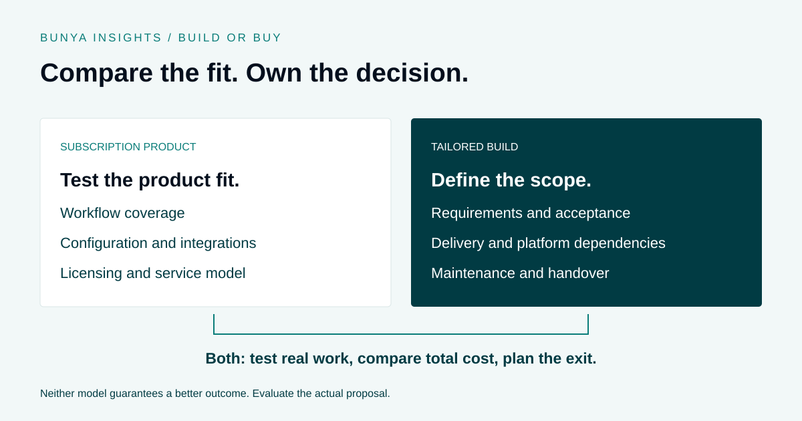

Systems & ownership
Build vs Buy Software for Financial Advice Firms
Compare fit, cost and responsibility over the life of the system.

Begin with the jobs the system must support
Write down the workflows that matter, the people involved and the information they need. Separate essential requirements from preferences that the team could change.
Use real examples when evaluating options. Ask how each option handles a handover, an exception and a change in responsibility, not only how the ideal path looks in a demonstration.
Compare the full cost
For a product, examine licensing, implementation, migration, integrations, support and any usage charges. Pricing models vary; not every subscription is charged per person.
For a build, include design, testing, training, maintenance and ongoing platform costs. Ownership does not make Microsoft licensing, third-party services or support free.
Be specific about control and ownership
Ask what can be configured, who can make changes and how data can be exported. Review the contract rather than assuming that a deployment model answers every ownership question.
For a tailored system, establish the delivered components, documentation, access and handover arrangements. Identify dependencies that another provider would need to understand to maintain it.
Reduce uncertainty before committing
A scoped prototype or Blueprint can expose gaps before the full implementation. Agree acceptance criteria, responsibilities and a realistic rollout plan.
Bunya uses a Blueprint to define the products and workflows for a firm’s Microsoft environment. It is a way to make the proposed build concrete, not a guarantee that every project has the same cost or timeline.
Build versus buy: what should you actually compare?
Use the same requirements and evaluation period for both options. A tailored build can depend on subscription platforms, while a subscription product can involve substantial configuration and implementation.
| Area | Subscription product | Tailored build |
|---|---|---|
| Workflow fit | Which requirements are native, configured or handled outside the product? | Which workflows are included, and how will their completion be accepted? |
| Change | What can you configure, and what depends on the vendor’s roadmap? | Who can make changes, and what testing and release process is required? |
| Cost | Include onboarding, licences, integrations, usage and support. | Include design, build, migration, platform licences and maintenance. |
| Continuity | Check support, data export and service dependencies. | Check documentation, access, handover and specialist availability. |
| Exit | What can you export, in what format and at what cost? | What components and rights transfer, and what subscriptions remain? |
A worked example: two options for the same review workflow
Imagine a firm wants to improve review preparation, document access and handovers. This illustrative comparison is a way to test proposals, not a customer result or a recommendation for a particular vendor.
- Set the acceptance criteria. A review has a responsible owner, the team can find the supporting documents, exceptions stay visible and authorised people can see progress.
- Test the subscription option. Ask the provider to demonstrate those steps, including a missing document and a reassigned task. Record configuration effort and any external tools required.
- Test the tailored option. Ask for a scoped model of the same process. Confirm the delivery stages, dependencies and who signs off each requirement.
- Compare the responsibilities. Identify who maintains the document connection, resolves failed automations and trains new staff under each proposal.
- Decide from the evidence. Compare the demonstrated fit, unresolved gaps, full cost and the team’s ability to operate the system.
A product that meets the requirements may be a sensible choice. A build may be appropriate when important requirements remain unmet and the firm can support the delivery and ongoing responsibilities.
Build a cost comparison you can maintain
Use a shared planning period, such as three years, and separate confirmed quotes from estimates. Do not treat uncertain time savings as guaranteed cash savings.
- Initial work: discovery, configuration or build, migration, testing, training and transition.
- Recurring costs: licences, hosting where applicable, integrations, support, usage and storage.
- Internal effort: project ownership, data cleanup, review, administration and staff training.
- Change and continuity: future improvements, maintenance, documentation and handover.
- Exit: data extraction, replacement integrations, transition support and any applicable contractual charges.
Review how the comparison changes with more users, higher usage or additional workflows. Request clarification where a proposal leaves a cost or responsibility unassigned.
A checklist before you commit
- Have both options been tested against the same essential workflows?
- Are exclusions and manual steps visible?
- Are migration quality and acceptance criteria defined?
- Are licensing, usage and support costs separated from implementation?
- Who owns the project internally, and how much time can they provide?
- Who maintains each integration and handles failures after go-live?
- Can the team obtain the records, access and documentation needed for a handover?
- Does the contract reflect the ownership and continuity expectations discussed?
See how Bunya uses a Blueprint to define the proposed build ↗
Common questions
Is building always more expensive?
There is no universal answer. Compare actual proposals over the same period, including internal effort and ongoing costs. A lower initial quote can leave more work or cost elsewhere.
Does owning the system mean there are no monthly fees?
No. A tailored system may still require Microsoft licences, third-party services, usage charges and support. Confirm the ongoing dependencies and costs in the proposal.
Can AI make a custom build maintenance-free?
No. AI can assist defined development or operating tasks, but the system still needs testing, access management, integration maintenance and accountable people.
Can a firm combine buying and building?
Yes. A tailored workflow can use existing platforms and connect to retained products. The important work is defining the boundaries, costs and maintenance responsibilities of the combined setup.